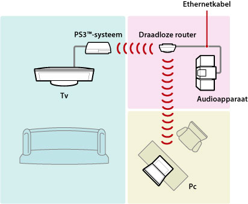
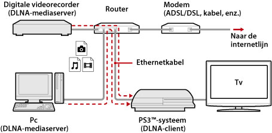
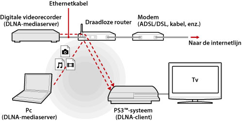
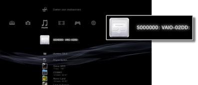
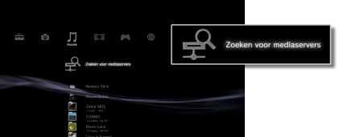

Instellingen > Netwerkinstellingen > Mediaserver verbinding
Mediaserver verbinding
De instellingen aanpassen voor de verbinding met apparaten die DLNA ondersteunen.
| Inschakelen | Verbinding inschakelen met apparaten die DLNA ondersteunen. |
|---|---|
| Uitschakelen | Verbinding uitschakelen met apparaten die DLNA ondersteunen. |
Over DLNA
DLNA (Digital Living Network Alliance) is een standaard waarmee u digitale apparaten zoals pc's, digitale videorecorders en tv's kunt aansluiten op een netwerk en data kunt uitwisselen tussen de verschillende verbonden, met DLNA-compatibele apparaten.
Apparaten die DLNA-compatibel zijn, hebben twee functies: "Servers" verspreiden media zoals beeld-, muziek- of videobestanden, en "clients" ontvangen de media en spelen ze af. Bepaalde apparaten vervullen beide functies. Wanneer u een PS3™-systeem als client gebruikt, kunt u door middel van een DLNA-mediaserver via een netwerk afbeeldingen weergeven of muziek- of videobestanden afspelen die op een apparaat zijn opgeslagen.

Verbind het PS3™-systeem en de DLNA-mediaserver
Verbind het PS3™-systeem en de DLNA-mediaserver door middel van een kabel of een draadloze verbinding.
Voorbeeld van een verbinding met een pc door middel van een kabel

Voorbeeld van een verbinding met een pc door middel van een draadloze verbinding

Een DLNA-mediaserver instellen
Stel de DLNA-server in zodat hij kan gebruikt worden door het PS3™-systeem. De volgende apparaten kunnen worden gebruikt als DLNA-mediaservers:
- Apparaten die de DLNA-standaard ondersteunen, met inbegrip van producten van andere ondernemingen dan Sony
- Personal computers (pc's) met Windows Media® Player 11 geïnstalleerd
Wanneer u een AV-apparaat gebruikt als DLNA-mediaserver
Schakel de DLNA-mediaserverfunctie in van het aangesloten apparaat om de inhoud ervan beschikbaar te maken voor gedeelde toegang. De instelmethode varieert naargelang het aangesloten apparaat. Meer informatie kunt u vinden in de handleiding van het apparaat.
Wanneer u een Microsoft® Windows®-pc gebruikt als DLNA-mediaserver
U kunt een Microsoft® Windows®-pc gebruiken als DLNA-mediaserver door gebruik te maken van de functies van Windows Media® Player 11.
1. |
Start Windows Media® Player 11. |
|---|---|
2. |
Selecteer [Media delen] in het menu [Mediabibliotheek]. |
3. |
Vink de optie [Mijn mediabestanden delen] aan. |
4. |
Kies de apparaten waarmee u data wilt delen uit de lijst met apparaten onder het selectievakje [Mijn mediabestanden delen] en selecteer vervolgens [Toestaan]. |
5. |
Selecteer [OK]. |
Opmerkingen
- Windows Media® Player 11 is niet standaard geïnstalleerd op een Microsoft® Windows®-pc. Download het installatiebestand van de Microsoft®-website om Windows Media® Player 11 te installeren.
- Meer informatie over het gebruik van Windows Media® Player 11 vindt u via de helpfunctie van Windows Media® Player 11.
- In sommige gevallen is het mogelijk dat originele DLNA-mediaserversoftware geïnstalleerd is op de pc. Meer informatie kunt u vinden in de handleiding van de computer.
DLNA-mediaserverinhoud afspelen
Wanneer u het PS3™-systeem inschakelt, worden DLNA-mediaservers op hetzelfde netwerk automatisch gedetecteerd en pictogrammen voor de gedetecteerde servers worden weergegeven onder  (Foto),
(Foto),  (Muziek) en
(Muziek) en  (Video).
(Video).
1. |
Selecteer het pictogram van de DLNA-mediaserver waarmee u verbinding wilt maken onder  |
|---|---|
2. |
Selecteer het bestand dat u wenst af te spelen. |
Opmerkingen
- Het PS3™-systeem moet zijn aangesloten op een netwerk. Raadpleeg
 (Instellingen) >
(Instellingen) >  (Netwerkinstellingen) > [Instellingen internetverbinding] in deze handleiding voor meer informatie over netwerkinstellingen.
(Netwerkinstellingen) > [Instellingen internetverbinding] in deze handleiding voor meer informatie over netwerkinstellingen. - Wanneer de methode voor het toewijzen van IP-adressen werd gewijzigd van AutoIP in DHCP in de instellingen voor de netwerkomgeving, voert u een nieuwe zoekopdracht uit voor servers onder
 (Zoeken voor mediaservers).
(Zoeken voor mediaservers). - De DLNA-mediaserver wordt enkel weergegeven wanneer [Mediaserver verbinding] is ingeschakeld onder (Instellingen) > (Netwerkinstellingen).
- De mapnamen die worden weergegeven, variëren naargelang de DLNA-mediaserver.
- Afhankelijk van de DLNA-mediaserver kunnen bepaalde bestanden mogelijk niet worden afgespeeld of kunnen handelingen tijdens het afspelen beperkt zijn.
- U kunt geen inhoud afspelen die beschermd is door auteursrechten.
- Bestandsnamen van gegevens die opgeslagen zijn op servers die niet compatibel zijn met DLNA, hebben mogelijk een asterisk toegevoegd aan de bestandsnaam. In sommige gevallen kunnen deze bestanden niet worden afgespeeld op het PS3™-systeem. Zelfs al kunnen de bestanden toch worden afgespeeld op het PS3™-systeem, is het mogelijk dat ze niet kunnen worden afgespeeld op andere apparaten.
Manueel zoeken naar DLNA-mediaservers
U kunt zoeken naar DLNA-mediaservers op hetzelfde netwerk. Gebruik deze functie wanneer er geen DLNA-mediaserver wordt gevonden bij het inschakelen van het PS3™-systeem.
Selecteer (Zoeken voor mediaservers) onder (Foto), (Muziek) of (Video). Wanneer de zoekresultaten worden weergegeven en u terugkeert naar het XMB™-menu, zal een lijst met DLNA-mediaservers worden weergegeven die kunnen worden aangesloten.

Opmerking
(Zoeken naar mediaservers) wordt enkel weergegeven wanneer [Mediaserver verbinding] ingeschakeld is in (Netwerkinstellingen) onder (Instellingen).